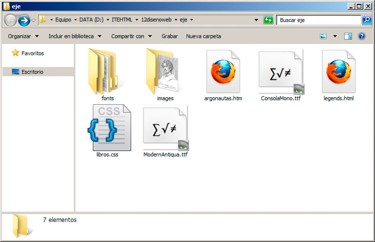

Tipo de letra
La propiedad font-family, seguida de una tipografía concreta o de una serie de tipos de letra separadas por comas, define la apariencia del elemento HTML en cuestión.
Hay muchos tipos de letra, pero un pequeño conjunto de ellos se usan con asiduidad, como el tipo Times New Roman, Helvética, Georgia, Arial, Verdana, etc. Cada uno tiene sus propias características. Normalmente los tipos sin serifa (como arial o verdana) suelen proporcionar una estética agradable y moderna, mientras que los que sí la tienen (como times) se suelen usar para textos largos, como libros o documentos más densos. La práctica nos irá marcando la pauta de qué tipo será el más adecuado en cada caso.
h1 {font-family: Georgia, "Times New Roman", Times, Serif;}
body {font-family: Helvetica, Arial, Sans-serif; }
Con este ejemplo estamos definiendo un formato concreto para toda la página y otro para los títulos. El resultado del ejemplo anterior sería el mostrado en la figura.
Al definir un valor para el cuerpo de la página, estamos estableciendo ese tipo de letra para todos los elementos excepto para aquellos en los que se indique otra cosa. Es una práctica muy habitual.
Normalmente siempre indicaremos un grupo de fuentes, ya que, si el navegador no tiene instalada la primera, recurrirá a las alternativas, hasta llegar a la última que hemos indicado, que define una fuente genérica. Las fuentes genéricas son serif, sans-serif, cursive, fantasy y monospace.
Nota
El que el nombre se ponga en mayúsculas o minúsculas no tiene relevancia; pero, si tiene varias palabras en su nombre, deberíamos ponerlo entre comillas simples o dobles.
Tipos de letra no instalados
Hasta la versión 3 del estándar CSS el uso de tipografías estaba bastante acotado, ya que sólo podíamos emplear aquellos tipos de letra que intuíamos que el usuario podría tener instalados. Ahora eso no es así y podemos indicar al navegador que emplee un tipo de letra que nosotros distribuimos junto a la página web.
Si observamos la figura, veremos que junto a la página web y la hoja de estilos hemos incorporado también un par de tipos de letra, archivos con extensión .ttf. Es decir, tipografías en formato TrueType.

Para incorporar esas tipografías, modificaremos las líneas anteriores estableciéndolas de la siguiente manera:
@font-face {
font-family: TipoTitulos;
src: url('ModernAntiqua.ttf');
}
@font-face {
font-family: TipoGeneral;
src: url('ConsolaMono.ttf');
}
h1 {
font-family: TipoTitulos, Serif;
}
body {
font-family: TipoGeneral, Sans-serif;
}
Es decir, mediante la directiva @font-face le indicamos al navegador que tenemos un nuevo tipo de letra basado en un archivo que nosotros mismos le suministramos. A su vez, en font-family emplearemos el nuevo tipo de letra. Incluso podemos poner una fuente genérica, por si hubiese algún problema de carga de los archivos.
El resultado se muestra en la figura:
Estamos empleando fuentes sin preocuparnos de si el usuario las tiene instaladas o no.
Nota
Actividad 1
Localizaremos una tipografía libre en Internet y se la aplicaremos a varias etiquetas del texto, empleando el método visto anteriormente. Comprobaremos su funcionamiento en al menos dos navegadores.
Se pueden encontrar tipografías libres mediante cualquier buscador. También podemos recurrir a algún sitio web concreto dedicado a ello, como http://openfontlibrary.org/ o http://www.theleagueofmoveabletype.com.
Tamaño de letra
Para el tamaño de letra se emplea la propiedad font-size.
body {font-size: 2em;}
En el valor, además de un número, indicaremos la medida que empleamos entre una de éstas:
- %: un porcentaje para el texto hará que varíen sus tamaños basados en el valor original. Por ejemplo, body {font-size: 80%; } hace que el texto se vea un 20% más pequeño de lo normal, mientras que un 150% lo incrementaría en un 50%.
- px, cm, pt o in: para indicar medidas en píxeles, centímetros, puntos o pulgadas. No suele ser muy apropiado, porque cada navegador puede mostrar diferencias en este sentido, aunque para definir estilos de impresión sí que nos dará unos valores más precisos.
- em: es el valor recomendado por el W3C, si queremos emplear valores fijos. 1em es su valor base y equivale a 16 píxeles. 2em sería el doble de tamaño .5em la mitad (es lo mismo que 0.5em), etc.
- Valores fijos: hay ciertos modificadores fijos que podemos emplear, que van de menor a mayor (xx-small, x-small, small, medium, large, x-large y xx-large). Éstos no necesitan un número y asignan siempre el mismo tamaño.
- Valores relativos: usando smaller (más pequeño) y larger (más grande) conseguimos que la tipografía aumente o disminuya su tamaño respecto a su valor original.
Los diferentes valores se pueden mezclar, pero finalmente lo más recomendable sería emplear una escala basada en porcentajes o en em. A nuestra plantilla de ejemplo incorporaremos el siguiente bloque:
body {font-size:100%;}
h1 {font-size:3em;}
h2 {font-size:2em;}
p {font-size:0.8em;}
Conseguiremos unos títulos grandes, con un texto general al 100% de su tamaño, es decir, a 1em y unos párrafos un poco más pequeños. La figura presenta el resultado:
En la hoja de estilos completa hemos combinado las propiedades dentro de sus selectores:
@font-face {
font-family: TipoTitulos;
src: url('ModernAntiqua.ttf');
}@font-face {
font-family: TipoGeneral;
src: url('ConsolaMono.ttf');
}body {
font-family: TipoGeneral, Sans-serif;
font-size:100%;
}h1 {
font-family: TipoTitulos, Serif;
font-size:3em;
}h2 {
font-size:2em;
}
p {
font-family: Georgia,"Times New Roman",Serif;
font-size:0.8em;
}
Actividad 2
Utilizando valores em definiremos diferentes parámetros para nuestra web de ejemplo. Comprueba lo que sucede, si a un elemento le asignamos 0em como tamaño o 1em.
Estilo de fuente
La propiedad font-style puede tomar el valor normal, que es el predefinido, italic (equivalente a cursiva) o oblique (equivalente a oblícua), que inclina el texto a la derecha. Normalmente coinciden estos dos últimos resultados pero, según la tipografía, podría haber cierta variación. La figura muestra su apariencia:
Nota
Texto en negrita
La propiedad font-weight especifica si el texto irá en negrita o no, con diferentes grados:
- bold: negrita.
- bolder y lighter: valor relativo que aplica un efecto más pronunciado en el primer caso o menos en el segundo.
- 100..900: también podemos indicar con un valor entre 100 y 900 el grado de "negrita" que queremos.
- normal: hace que el texto no se muestre en negrita, saltándose cualquier otra directriz marcada por otras normas.
Mayúsculas y minúsculas
La propiedad font-variant se emplea para forzar que un texto concreto se muestre en mayúsculas con tamaño de minúsculas, lo que se conoce como versalitas ("versal" es un sinónimo de mayúsculas).
Sus valores son normal o small-caps, con los resultados que se muestran en la figura:
Ahora todos juntos
Todas las propiedades anteriores tienen algo en común; pueden ser agrupadas mediante una propiedad única denominada font. Los valores que podemos asignarle son todos los anteriores, separados por espacios, siguiendo este orden:
- font-style (opcional)
- font-weight (opcional)
- font-variant (opcional)
- font-size
- font-family
Los valores opcionales no es necesario indicarlos. De hecho, aún se puede añadir un valor más justo antes de font-family denominado line-height, que veremos un poco más tarde.
Así una línea mínima que definiese el estilo del cuerpo de la página podría quedar así:
body {font: 1em, TipoGeneral, Sans-serif; }
Un ejemplo más completo sería éste:
p {font:italic bolder small-caps 0.8em Georgia,"Times New Roman",Serif; }
Aplicado a nuestro ejemplo obtendríamos el resultado de la figura. Muy recargado, pero nos sirve para comprobar cómo se pueden condensar varias propiedades en una sola.
Pregunta de Elección Múltiple
|
font-variant.
| |
|
font-weight.
| |
|
font-style.
| |
|
font-size.
| |
|
font-family.
|